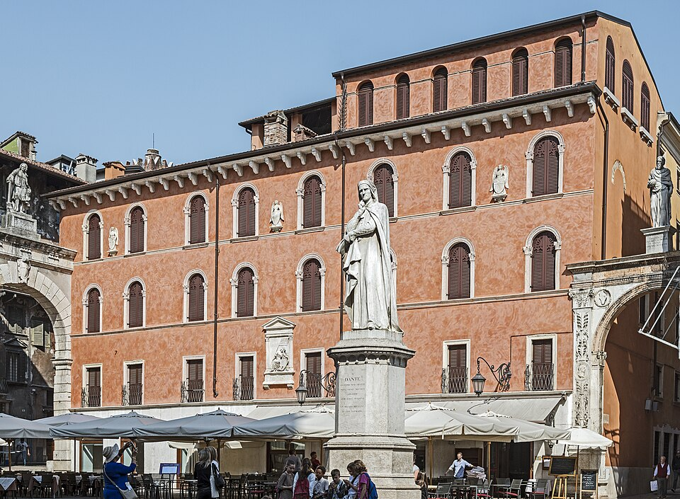
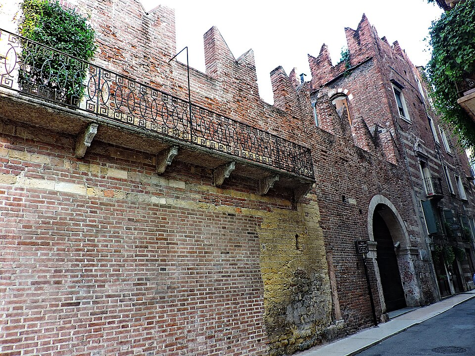
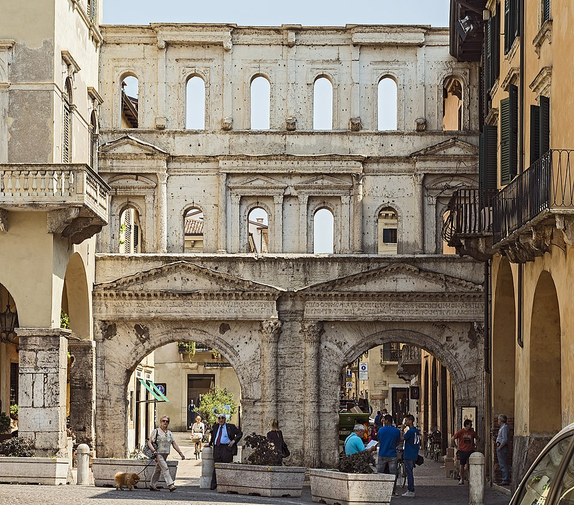

Verona
Introduzione
Nel 1303, poco dopo l’esilio da Firenze, Dante Alighieri trovò uno dei suoi primi rifugi a Verona presso la corte di Bartolomeo della Scala, signore della città dal 1301 al 1304 e membro della potente famiglia scaligera. In una Verona di orientamento ghibellino, aperta ad accogliere esuli politici e intellettuali, Dante fu ospitato con quella cortesia e generosità che la tradizione riconosce nel “gran Lombardo” citato nel Paradiso:
"Lo primo tuo refugio e ’l primo ostello
sarà la cortesia del gran Lombardo
che ’n su la scala porta il santo uccello"
Divina Commedia, Paradiso, XVII, 70-72
Dopo questo primo soggiorno, Dante tornò a Verona tra il 1312 e il 1318, trovando protezione presso Cangrande della Scala, figura centrale della politica italiana del tempo e noto mecenate. In questo secondo periodo, più lungo e stabile, la città divenne per il poeta non solo un rifugio, ma anche un vivace centro culturale, nel quale poté proseguire la sua attività letteraria e politica, rafforzando il legame tra la sua esperienza di esule e l’ambiente scaligero.
Luoghi legati a Dante
- Piazza Dante
- Chiesa di Sant'Elena
- Casa di Romeo
- Porta Borsari
[Mappa interattiva qui]
Piazza dei Signori detta Piazza Dante
Piazza dei Signori, detta anche Piazza Dante, situata nel cuore di Verona, ospita la statua del poeta e simboleggia la memoria locale del soggiorno di Dante nella città scaligera. La statua, realizzata in epoca moderna, raffigura Dante in posizione pensosa, con lo sguardo rivolto verso il centro della città, e vuole ricordare non solo il suo soggiorno, ma anche l’importanza della sua opera per la cultura veronese e italiana.

Piazza DanteChiesa di Sant'Elena
La Chiesa di Sant’Elena a Verona è uno dei principali luoghi religiosi del centro storico e la tradizione cittadina la collega strettamente alla presenza di Dante durante il suo soggiorno alla corte di Cangrande della Scala. Secondo le cronache locali, proprio qui, nel gennaio 1320, Dante espose ai canonici e agli uomini di cultura veronesi la sua celebre Quaestio de aqua et terra, un vero e proprio trattato in latino in cui affrontò una delle più dibattute questioni cosmologiche dell’epoca: se l’acqua fosse naturalmente più alta o più bassa della terra rispetto alla superficie del mare.
_-_Sant%27Elena_(Verona)_-_Facade.JPG) Chiesa di Sant'Elena
Chiesa di Sant'Elena
Casa di Romeo
La cosiddetta Casa di Romeo a Verona, situata nel cuore del centro storico, è uno dei luoghi simbolo legati alla leggenda shakespeariana della città, ma assume un significato particolare anche nel contesto dantesco. Nel Purgatorio, infatti, Dante, invita l'imperatore ad osservare la tragica situazione politica italiana, caratterizzata da rivalità e lotte intestine citando come esempio le famiglie dei Montecchi e dei Cappelletti, che diventeranno successivamente protagoniste anche del celebre dramma Shakespeariano.
"Vieni a veder Montecchi e Cappelletti,
Monaldi e Filippeschi, uom sanza cura:
color già tristi, e questi con sospetti!"
Divina Commedia, Purgatorio, VI, 106-108

Casa di RomeoPorta Borsari
Porta Borsari, una delle principali porte di accesso alla Verona romana e medievale, segnava il confine tra la città e le strade di collegamento verso la pianura padana. Situata lungo la storica Via Postumia, era un punto di passaggio strategico per mercanti, pellegrini e viaggiatori, nonché un luogo simbolico della vita urbana veronese.
Su questo tratto della città si trova oggi la targa che ricorda il Palio del Drappo Verde, antica corsa cittadina medievale. La tradizione vuole che in questa competizione le squadre delle varie contrade si sfidassero lungo le vie principali, e Dante fa riferimento alla corsa nella Divina Commedia come elemento simbolico per descrivere movimento, gare e rivalità sociali:
"Poi si rivolse, e parve di coloro
che corrono a Verona il drappo verde
per la campagna; e parve di costoro
quelli che vince, non colui che perde."
Divina Commedia, Inferno, XV, 121-123

Porta Borsari